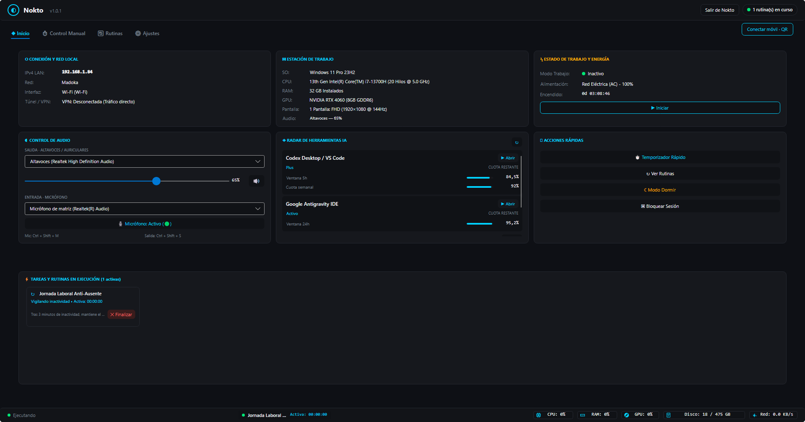

Tu PC con Windows,
bajo tu control total.
Automatiza tareas repetitivas, silencia tu audio con atajos globales por hardware y supervisa tu equipo desde el celular por Wi-Fi. Ligero, sin conexión obligatoria a la nube y gratis.

¿Qué puedes automatizar con Nokto?
Configuraciones frecuentes para resolver situaciones cotidianas al trabajar, renderizar o jugar en Windows.
El Render de Medianoche
Dejas Blender, Premiere o Unreal exportando y te vas a dormir. Nokto monitoriza la carga de la GPU: cuando el render termina y la GPU cae por debajo del 5% durante 2 minutos, suspende o apaga el PC automáticamente.
Mute en Llamada Inesperada
¿Estás en Discord, una reunión de Teams o jugando a pantalla completa y alguien entra a tu cuarto? Un atajo de teclado físico silencia el micrófono a nivel de driver WASAPI en 0.2 ms, sin importar qué ventana esté activa.
Cierre de Jornada Laboral
Dan las 18:00 hrs. Nokto fuerza el cierre de Teams, Slack y Outlook, baja el volumen al 20%, pone el fondo relajante y te recuerda que tu tiempo personal ha comenzado. Cero fricción para desconectar.
Vigilar el PC desde la Cama
Escaneas el código QR con tu celular. En el navegador del teléfono ves una captura en vivo del monitor para saber si la descarga terminó, y puedes apagar o pausar la música desde las sábanas por Wi-Fi local.
Dormir con Música o Podcast
Te gusta quedarte dormido escuchando Spotify o YouTube. Configura un desvanecimiento suave de volumen que baja 5% cada 10 minutos hasta silenciarse por completo y poner la máquina en reposo.
Lanzador de Entorno de Trabajo
A las 9:00 AM arranca tu espacio productivo: abre VS Code, tu navegador en tus repositorios de GitHub y tu terminal favorita, todo listo antes de que te sientes a tomar café.
Prueba el funcionamiento de las rutinas y el audio
Observa en tiempo real cómo reacciona el sistema ante los disparadores antes de usar la aplicación.
Elige cómo quieres usar Nokto
Binario optimizado nativo para Windows 11 y 10 (x64). Sin dependencias adicionales.
Versión Portable
Un único archivo ejecutable autónomo. Descomprime o corre directamente desde cualquier carpeta o pendrive USB sin tocar el registro de Windows.
- ✓ Cero instalación requerida
- ✓ Guarda la configuración en la misma carpeta
- ✓ Totalmente actualizable desde la aplicación
Instalador Setup
Instalador convencional para Windows. Agrega accesos directos al Menú Inicio, a la barra de tareas y opción de arranque automático al iniciar sesión.
- ✓ Integración nativa con Menú Inicio y Bandeja
- ✓ Desinstalador limpio en Panel de Control
- ✓ Totalmente actualizable desde la aplicación